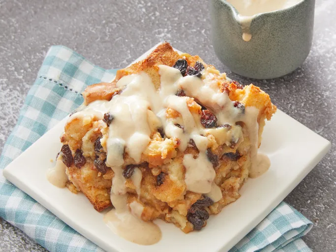

Home
Pudding with Vanilla Sauce

Description
We found my mom's best bread pudding recipe tucked inside her Bible when going through her things. It has become a family tradition on the first snow day of the year, and if that doesn't happen, which can be the case here in central Virginia, we know it'll be the featured dessert at Easter and anytime a comfort food is in order.
Ingredients
Bread Pudding
- 3 cups whole milk
- 1 1/2 cups white sugar
- 1/4 cup butter, melted
- 3 eggs, beaten
- 2 tablespoons light brown sugar
- 1/2 teaspoon ground cinnamon
- 10 slices hearty farmhouse-style bread, toasted and cut into cubes
- 1 cup raisins
Vanilla Sauce
- 1 1/4 cups whole milk
- 1/2 cup light brown sugar
- 2 tablespoons butter, melted
- 1 egg
- 1 tablespoon all-purpose flour
- 1 pinch ground cinnamon
- 1 pinch salt
- 1 tablespoon vanilla extract
Steps
- Gather all ingredients. Preheat the oven to 375 degrees F (190 degrees C). Grease a 2-quart baking dish.
- For bread pudding, whisk together milk, sugar, melted butter, eggs, brown sugar, and cinnamon in a mixing bowl.
- Gently stir in bread cubes and raisins.
- Lightly spoon mixture into the prepared baking dish. Bake in the preheated oven until browned and set in the middle, 50 to 55 minutes; cover the dish with foil after 30 minutes to prevent excessive browning. Let pudding stand for 10 minutes before serving.
- For vanilla sauce, whisk together milk, brown sugar, butter, egg, flour, cinnamon, and salt in a heavy saucepan until smooth.
- Cook over medium heat, whisking constantly, until sauce is thickened and coats the back of a spoon, 10 to 12 minutes. Stir in vanilla extract.
- Pour sauce over warm bread pudding or serve on the side in a bowl.
Recipe sumbitted by Gail Cobile at allrecipes